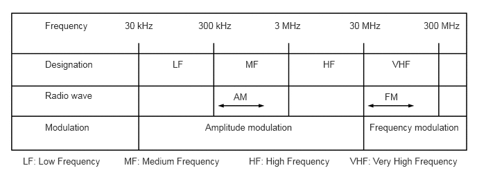
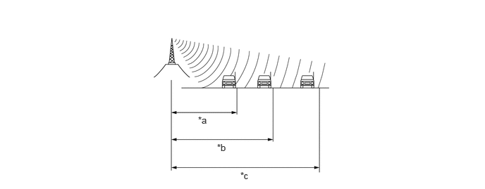

| Last Modified: 10-07-2025 | 6.11:8.1.0 | Doc ID: NM100000002GLBX |
| Model Year Start: 2024 | Model: Tacoma | Prod Date Range: [12/2023 - ] |
| Title: AUDIO / VIDEO: AUDIO AND VISUAL SYSTEM: RADIO MODE; 2024 - 2026 MY Tacoma Tacoma HV [12/2023 - ] | ||
RADIO MODE
FUNCTION
(a) AM and FM Function
(1) Radio Frequency Band
- Radio broadcasts use the radio frequency bands shown in the table below: 
(2) Service Area
- The service areas of AM and FM broadcasts are
vastly different. Sometimes an AM broadcast can be
received very clearly but an FM stereo broadcast
cannot. FM stereo has the smallest service area, and
is prone to pick up static and other types of
interference such as noise. 
*a
FM (Stereo)
*b
FM (Monaural)
*c
AM
-
-
(3) Radio Reception Problems
HINT:
In addition to static, other problems such as "phasing", "multipath" and "fade out" exist. These problems are not caused by electrical noise, but by the radio signal propagation method itself.
- Phasing
- AM broadcasts are susceptible to electrical
interference and another kind of interference
called phasing. Occurring only at night,
phasing is the interference created when a
vehicle receives 2 radio wave signals from the
same transmitter. One signal is reflected off
the ionosphere and the other signal is received
directly from the transmitter.
*a
Phasing
*b
Ionosphere
- AM broadcasts are susceptible to electrical
interference and another kind of interference
called phasing. Occurring only at night,
phasing is the interference created when a
vehicle receives 2 radio wave signals from the
same transmitter. One signal is reflected off
the ionosphere and the other signal is received
directly from the transmitter.
- Multipath
- Multipath is a type of interference created
when a vehicle receives 2 radio wave signals
from the same transmitter. One signal is
reflected off buildings or mountains and the
other signal is received directly from the
transmitter.
*a
Multipath
-
-
- Multipath is a type of interference created
when a vehicle receives 2 radio wave signals
from the same transmitter. One signal is
reflected off buildings or mountains and the
other signal is received directly from the
transmitter.
- Fade Out
- Fade out is caused by objects (buildings,
mountains and other such large obstacles) that
deflect away part of a signal, resulting in a
weaker signal when the object is between the
transmitter and vehicle. High frequency radio
waves, such as FM broadcasts, are easily
deflected by obstructions. Low frequency radio
waves, such as AM broadcasts, are less likely
to deflect.
*a
Fade Out
-
-
- Fade out is caused by objects (buildings,
mountains and other such large obstacles) that
deflect away part of a signal, resulting in a
weaker signal when the object is between the
transmitter and vehicle. High frequency radio
waves, such as FM broadcasts, are easily
deflected by obstructions. Low frequency radio
waves, such as AM broadcasts, are less likely
to deflect.
(4) Noise Problem
- Technicians must have a clear understanding about
each customer's noise complaint. Use the following
table to diagnose noise problems.
Radio Frequency
Noise Occurrence Condition
Presumable Cause
AM
Noise occurs in a specific area
Foreign noise
Noise occurs when listening to an intermittent broadcast
An identical program transmitted from multiple towers can cause noise where the signals overlap
Noise occurs only at night
Signal phasing
FM
Noise occurs while driving in a specific area
Multipath resulting from a change in FM frequency
(b) "HD Radio" Function (Models with HD Radio Function)
(1) The "HD Radio" system is a radio system that broadcasts in the IBOC (In-Band On-Channel) form that the iBiquity Co. has developed. By expanding the bandwidth per channel of conventional FM/AM bands, digital audio and data signals are additionally transmitted.
(2) "HD Radio" technology is manufactured under license from iBiquity Digital Corporation. U.S. and Foreign Patents. "HD Radio" and the HD and HD Radio logos are proprietary trademarks of iBiquity Digital Corporation. Also, traffic and weather information can be received and displayed on the navigation screen.
(c) SiriusXM Function (Models with SiriusXM Function)
(1) Compatible with SriusXM (SXM) 360L.
(2) SiriusXM (SXM) satellite radio is a satellite digital radio broadcast provided by SiriusXM Radio Inc. The broadcast (pay-type) is performed through satellites and terrestrial repeater networks. Several unique channels are available, and even if a vehicle changes locations, the same information can be received without breaks. Information such as song names, broadcast station names, etc. can be received.
NOTICE:
To receive pay-type broadcasts, the customer must enter into a pay-type contract with SiriusXM Satellite Radio Inc. After entering into a contract, registration of the Radio ID is necessary. Also, if parts are replaced, the Radio ID must be re-registered.
HINT:
When disconnecting the cable from the negative (-) auxiliary battery terminal, the broadcast station logo data will be initialized. It takes a while for the broadcast station logo data to be updated to the latest data.
(d) Radio Enhancement Function (for AM/FM/"HD Radio")
(1) The radio enhancement function consists of the following items:
|
Item |
Details |
|---|---|
|
Show Station Logos |
Displays the radio station logo. By displaying the radio station logo, radio stations can be searched for visually. |
|
Radio Category Improvement |
Provides fine-tuned organized station categories from a third-party provider. |
|
Station List Auto Refresh |
Performs an update when the vehicle has travelled 7 miles based on GNSS/GPS position information or 1 week has elapsed since the last update. |
|
Display Station Song Cover Art |
Identifies music output by the radio and if music information is not provided by the radio station, music information and cover art stored in the audio head unit is displayed. |
(e) Hybrid Radio Function (Models with Hybrid Radio Function)
(1) Internet Radio links to the Gracenote server (metadata server) via the cloud and the latest information such as the track title and cover art can be displayed.
(2) By automatically switching to IP when the analog broadcast signal is weak, it is possible to continue to listen to the same radio station. When the analog signal can be received for 10 minutes or more, the system changes from the IP broadcast to the analog broadcast automatically.
HINT:
- The target source for Internet Radio is AM/FM/"HD Radio" only.
- Some broadcasting stations may not be compatible with Internet Radio.
 |
Gracenote, the Gracenote logo and logotype, "Powered by Gracenote" and Gracenote MusicID are either registered trademarks or trademarks of Gracenote, Inc. in the United States and/or other countries. |